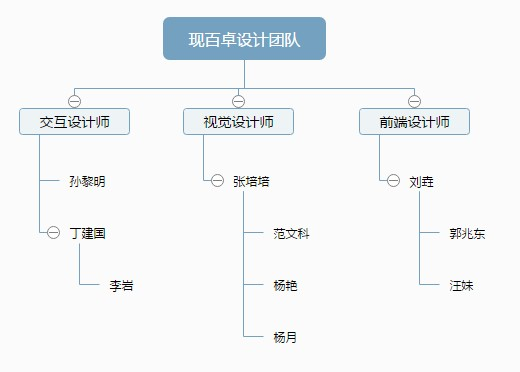
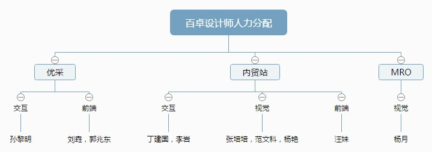

现百卓团队
百卓设计师人力分配
通过组织分享和培训，提升交互设计师的影响力和话语权；同时计划打破现有项目限制，让三名交互设计师穿插起来，跨项目组和方向，熟悉整个百卓产品线的设计模式和开发方法。
引导视觉设计师主动发现问题，设计驱动产品优化；坚持视觉稿部门内分享验收，确保质量；发起设计比赛，如字体设计、icon设计，提升视觉设计师的能力。
坚持推进“前端融合”。计划17年一季度结束，郭兆东和张杰达到各自初级水平；二季度结束，徐宝石和我分别达到中级水平。内贸站由于人力问题，暂缓实施。其次，重点提升前端设计师移动端、动效的开发水平。
组织和运营交流沟通，就文案、视觉表现形式等常见分歧问题彼此充分沟通，达成统一共识，减少后期沟通时间，降低成本